5 dic 1901 - 15 dic 1966
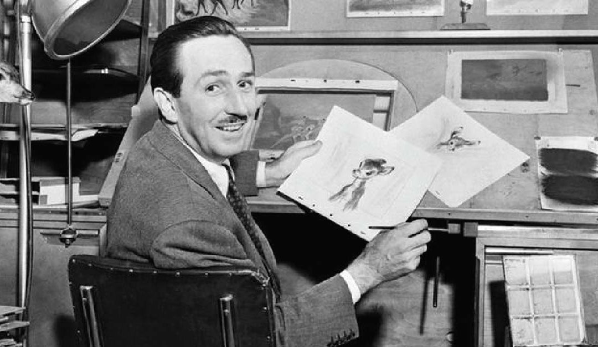
Who is he?
1901
Walt Disney nacio en Chicago
Nacio el 5 de diciembre en Chicago, Illinois. Sus padres fueron Elias y Flora Call Disney. Walter crecio trabajando en la granja de su padre
1911
Walter Disney encontro su pasion por el arte
Disney conocio a Walter Pfeiffer y lo entrodujo al mundo del arte. Entonces se matriculo en el intituto de Arte de Kansas City
1919
Walt Disney conocio a Ubbe Iwerks
En su adolescencia Walt encontro trabajo como aprendiz en una agencia de publicidad, el estudio de Arte Comercial la Pesmen-Rubin, alli conocio a Ubbe Iwekers
1922
Walt y Ubbe crearon su primera empresa
El fundo con la ayuda de Ubbe la compañia Laugh-O-Gran Films. Sin embargo, los gatos de produccion superaban los beneficios y al año siguiente cerro la empresa
1924
Disney se mudo a Hollywood
Disney soñaba con crear sus propias caricaturas y se mudo a Hollywood con su hermano Roy en busca de oportunidades
1925
Walt se caso con Lilian
En el año 1925 Walter Disney se caso con Lilian Bounds. Se conocieron en los Angeles despues que se graduo Lilian
1928
Walt creo Mickey Mouse
En el al año 1928 Walt Disney creo el caracteristico personaje Mickey Mouse y recibio un gran exito
1929
Walt creo las sinfonias tontas
Lanzo una serie de cortometrajes musicales llamados Sinfonias tontas, el primer musical fue "The Skeleton Dance"
1932
Walt Disney fue premiado por sus logros
Disney recibio un premio especial de la Academia por la creacion de Mickey Mouse, en el mismo año recibio un premio por sus cortometrajes musicales
1933
Nacio su primera hija
Lily y Walter tuvieron una hija, Diane Marie Disney. Nacio el 18 de diciembre
1936
Adopto a su segunda hija
El 31 de diciembre Walter y Lily adoptaron a una hija llamda Sharon Mae Disney.
1937
Creo el primer largometraje
Realizo el primer largometraje de dibujos animados de la historia Blancanieves y los siete enanitos
1939
Recibio un Oscar y fue conocido como la Edad de Oro
El exito de Blancanieves otorgo a Walter un Oscar. En el mismo año construyo un nuevo campus para Walt Disney Studios en Burbank, periodo que fue marcado como "La edad del Oro" de la animacion.
1955
Gran inauguracion de Disneyland
En dicho año fue la gran inauguracion de Disneyland. Walt Disney estaba emocionado por dicha apertura, lo que lo describio como uno de sus sueños mas grandes
1966
Fallece Walt Disney
Walt Disney muere de cancer de pulmon. Walter vivio una vida emocionante y cumplio muchos de sus sueños
Pictures
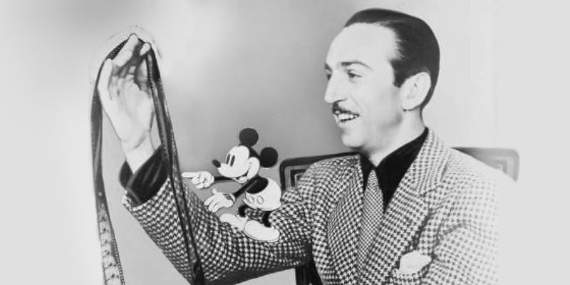
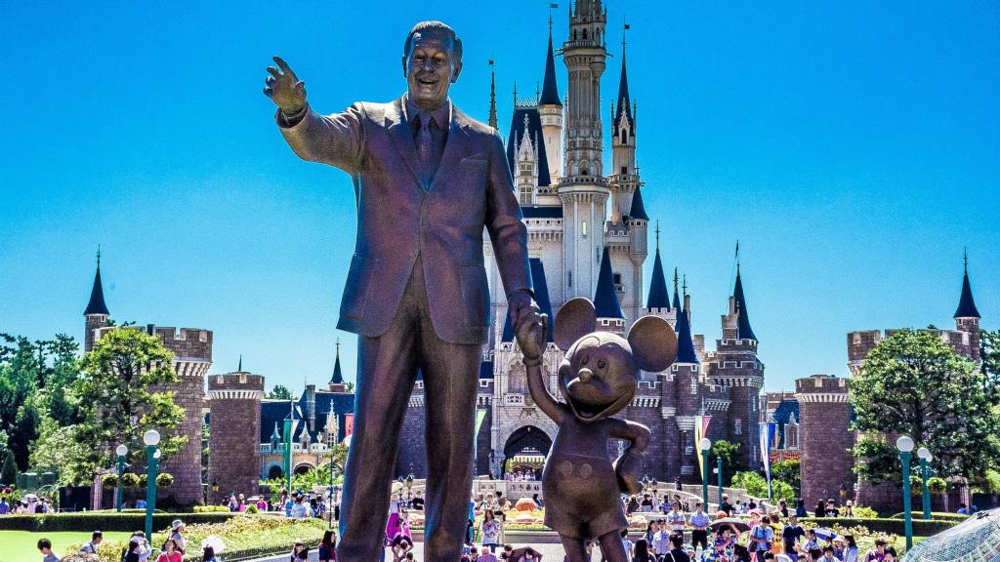
 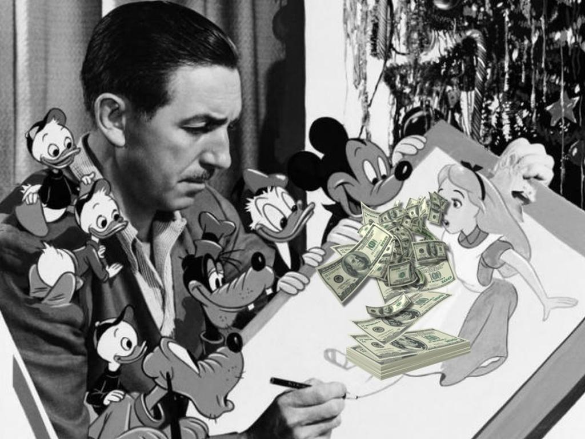
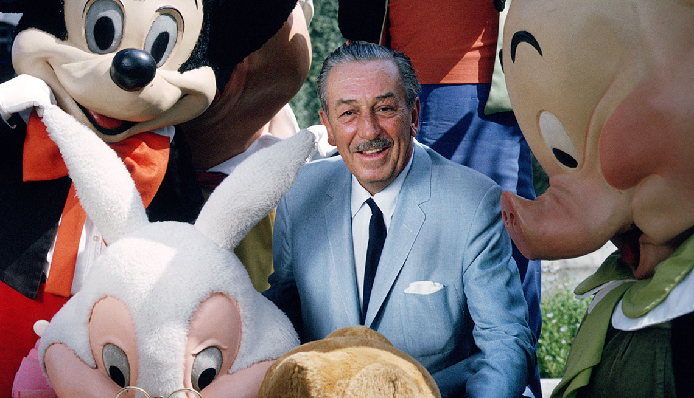
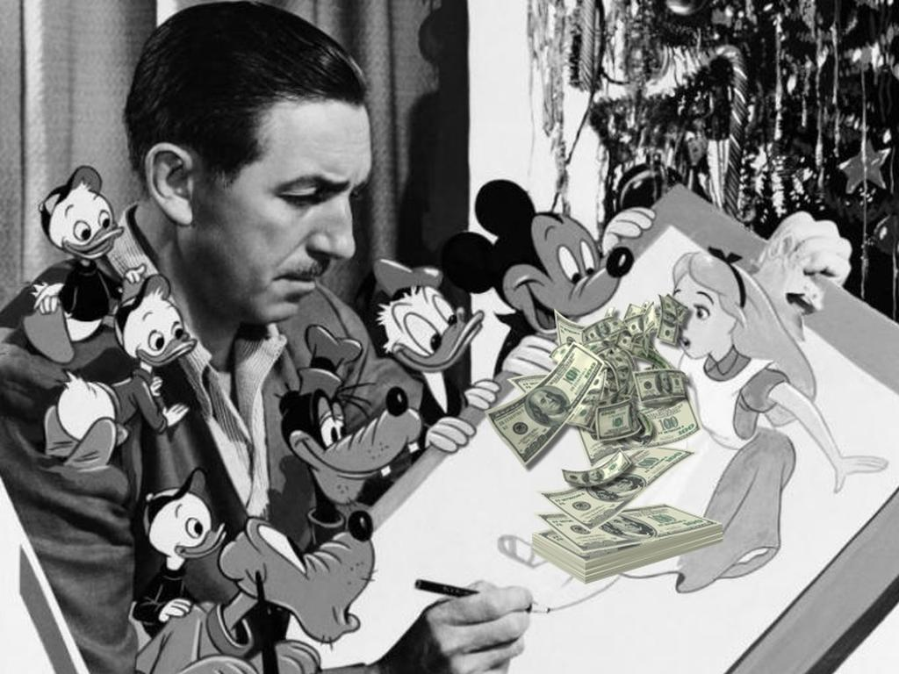
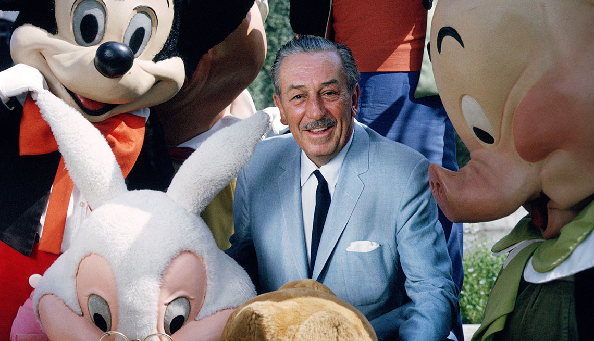

 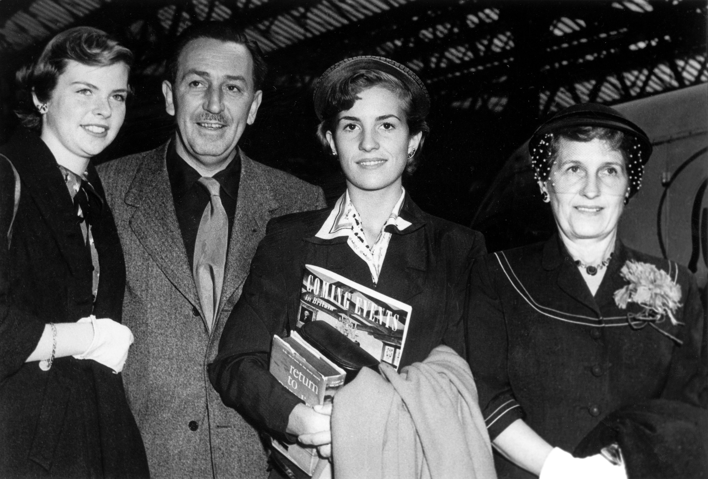
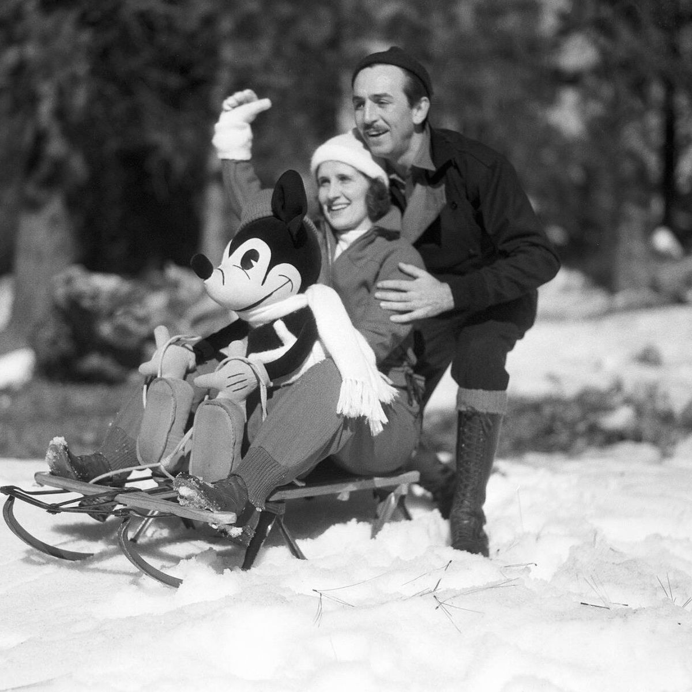
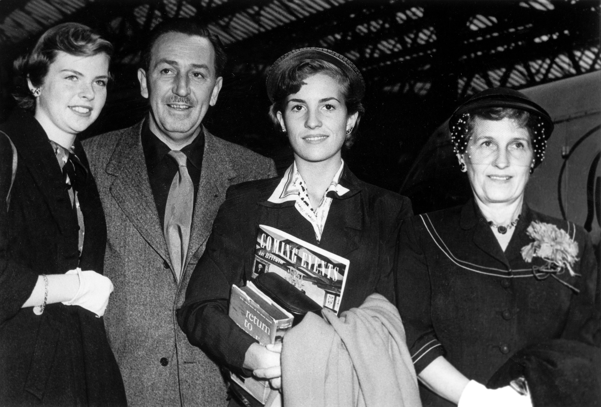
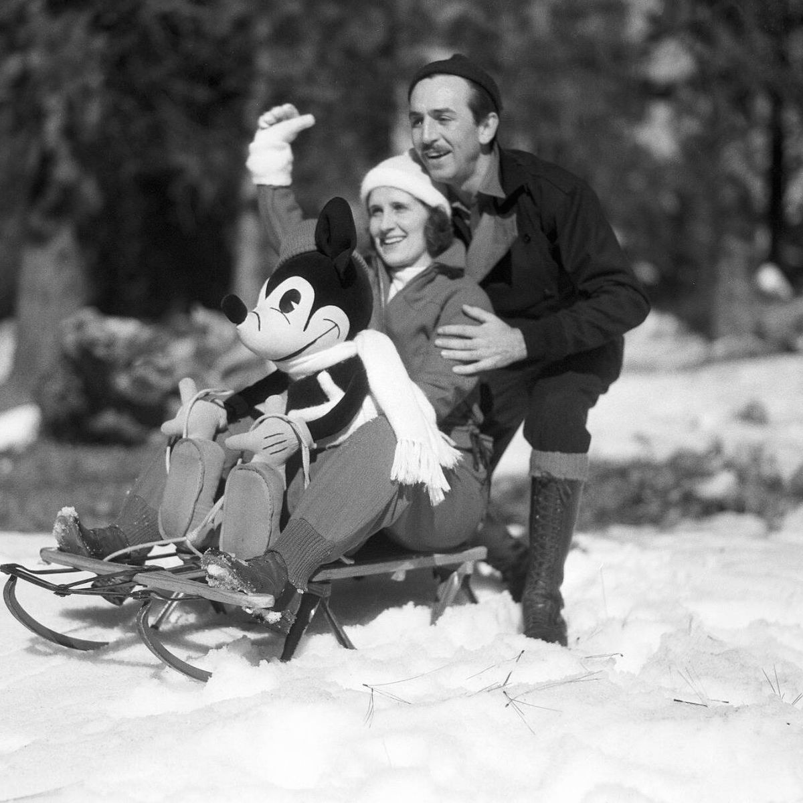
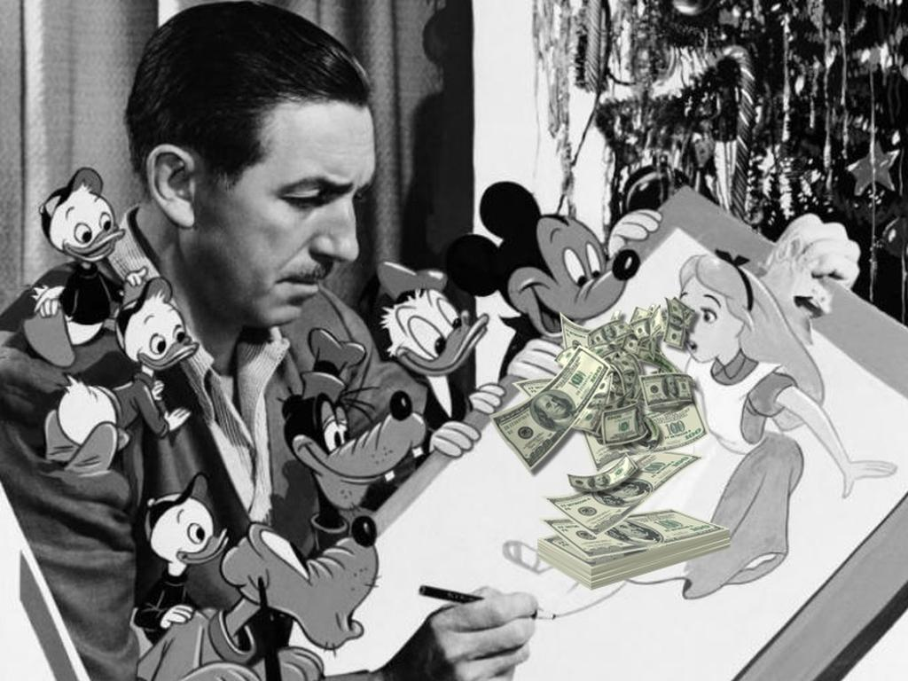
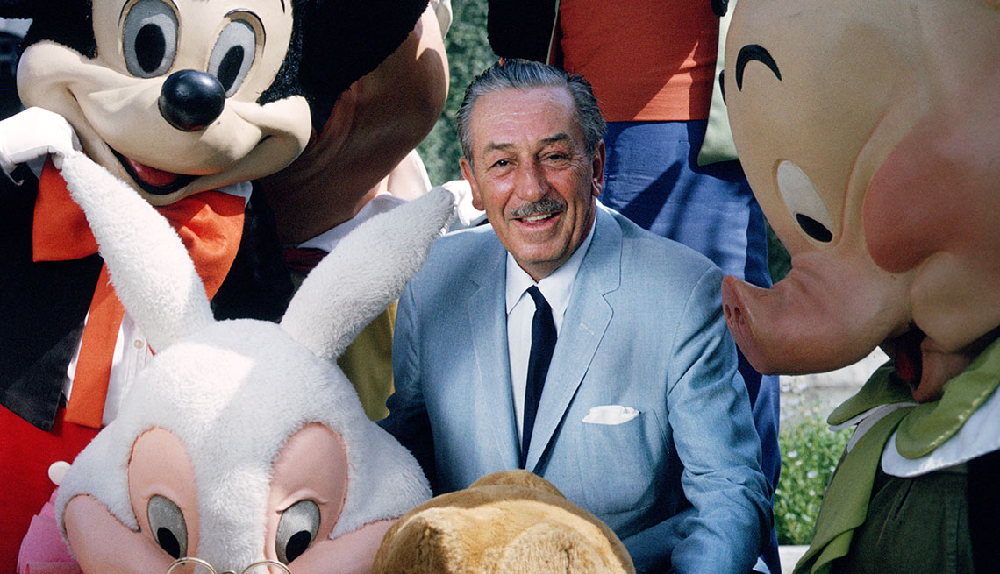
Books
Esto solo es una prueba de urgencia
Esto solo es una prueba de urgencia
Esto solo es una prueba de urgencia